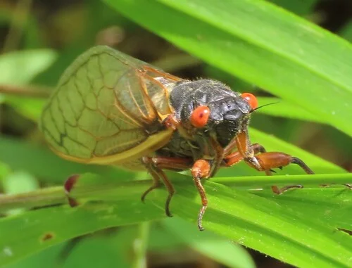

周期蝉羽化后，细枝末端成簇枯褐
周期蝉成虫消失后，绿树上还可能陆续出现零星枯褐枝梢。雌虫在细枝上划缝产卵，伤处以上的枝梢可能萎蔫或折断，而其他树冠仍然健康。

先看哪里
从褐色叶簇往回找到绿色部分，转动细枝，在铅笔粗的枝条上特别留意成排窄裂缝。
确认线索
看看树干上是否还有空蝉蜕。之前若见红眼、橙色翅脉的蝉大量鸣叫，更支持当地有周期蝉羽化，最终仍要检查枝上的产卵伤。
相似症状
干旱可能引起树冠普遍萎蔫。产卵伤则常在一根细枝上形成明显界线，伤口以内仍绿，外侧叶片变褐。
处理方法
大树通常能承受零星枯梢。当地预计将大量羽化时，可提前给新栽易感树罩细网，收好开口以保护嫩枝。
如何复查
成虫活动结束后撤网，检查并记录主梢是否折损。只有一根幼嫩主梢的小树，比仅有几根侧枝枯梢的大树更需跟踪。